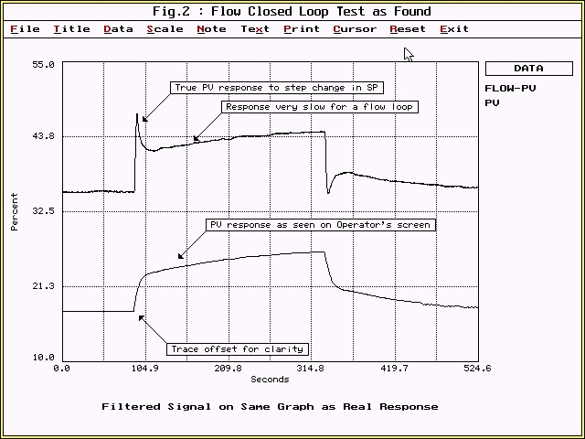
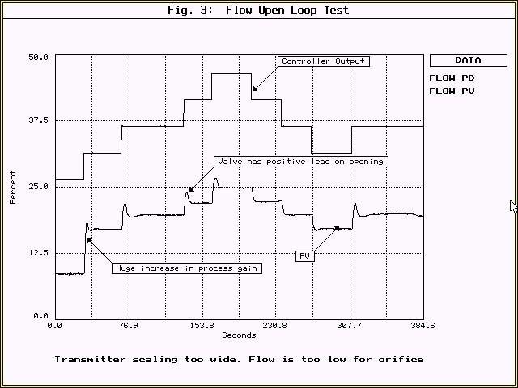
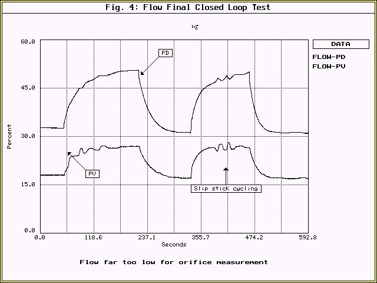
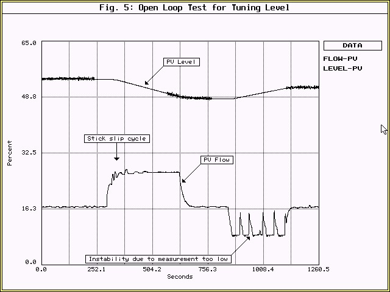

|
| [Home] [About us] [Contact us] [Training] [Optimisation services] [Protuner] |
| [Loop signatures] [Case histories] [Continuous loop performance monitoring] |
|
Control Loop Case History 27 INTERESTING PROBLEMS IN A CASCADE LEVEL LOOP Yours truly had just returned from a trip to the UK. One of the jobs performed was on board an oil rig situated some 200 kms. off the coast of Scotland. One of the loops investigated was a fairly critical level control system. The control layout is shown in the schematic in Figure 1. A level transmitter (LT) measures the level in the tank and sends its signal to a level controller (LIC), the output of which cascades onto the setpoint of the secondary flow controller (FIC). This controller is there to ensure that the flow of product pumped out of the tank matches the dictates of the level controller. A very tight level control is required. The flow metering method used is an orifice plate with a differential pressure transmitter across it.
Cascade loops are usually a good control strategy when dealing with the control of slow processes like level, temperature, pH, and pressure. In general, one can think of a cascade secondary flow loop as "making the valve intelligent". There would be far fewer control problems if you could in fact have valves being able to measure and control the flow through them in accordance with the dictates of the master controller, rather than just trying to position the valve stem. Cascade loops can largely alleviate most of the valve problems like hysteresis, backlash, and non-linearity. They can also quickly deal with problems like varying pressure in the flow line. It is difficult for the master controller to handle these problems on its own, as it is tuned to control a slow process, and it cannot make adjustments quickly enough to sort out these difficulties. It is really important however that the slave (or secondary) loop should be at least 7 times faster than the master (or primary) loop. If it is not, then cascade control can actually make things worse rather than improving them. This is due to the fact that cascade loops are generally interactive, and if the ultimate period of each of the loops is close to the other, then they will tend to "fight" each other. (Refer to a previous loop article dealing with disturbances at various frequencies). One always starts on a cascade system by initially optimising the slave loop. The first test normally performed is a closed loop "as found", where a setpoint change of normally 5 to 10% is made, and after the process has again stabilised, the setpoint is returned to its original setting. The client's control system is a well known make of DCS. One of its features is that it allows one to put first order lag filters onto the process variable (measurement) signal with remarkable ease. In fact the basic controller "faceplate" offers effectively four knobs, P + I + D + FILTER. Previous articles have delved into the problems of filters, the "world's biggest liars". This is a lovely example of their misuse. People optimising loops often mistakenly believe that the filter sorts out all the problems, as bad things look much better on the operators' screens. Therefore when filters can be easily applied, they are often used both liberally and badly. This is such a case. Figure 2 displays recordings of this test and two traces are shown. The top one is the actual process variable (flow signal) as recorded on a Protuner analyser which was connected directly to the input of the DCS. A huge initial overshoot can be seen on the response to the step change in setpoint followed by a slow rise to finally get the flow to setpoint. This took nearly 4 minutes, for a measly 10% setpoint change! The overshoot is indicative of a huge filter on the DCS, and the slow response indicates poor tuning with too much gain and too long an integral. (The filter used was found to have a time constant of 15 seconds which is relatively massive for a flow signal). Apart from this, it can be seen that the actual signal was virtually noise free. So why use a filter at all?  The lower trace is in fact the same flow signal as recorded on the actual DCS, and then later downloaded onto the Protuner analyser. (The traces are vertically offset in the figure for clarity). Note that not a trace of an overshoot can be seen. Once again the filter plays its wonderful deceptive trick of suppressing peaks and troughs, and hides the "horrors of reality". The open loop test on the flow loop is shown in Figure 3. In this test a series of step changes of equal size are made on the process demand (controller output) in both the positive and negative direction. These changes are made in the region where the flow is normally controlled.  Several problems were exposed here. Firstly the response of the valve to the changes is not consistent. On all the positive steps the valve responded with an overshoot, but on the negative steps the overshoot did not occur in every instance. This type of overshoot, which acts as a positive lead, is caused by excessive gain in the valve positioner. In most cases it does not cause a serious problem, but does require the controller to be detuned to quite a large extent for reasons of stability. From the control point of view it is not nice to have a valve that gives different responses at different times, as it adds to non-repeatability, and can effect the tuning. One must be very careful that you tune for the worst condition for safety reasons. This means that optimum fast tuning which is desirable on a cascade secondary loop can be compromised. The second problem is that the flow which is in the normal operating region, is running between 10% and 25% of full scale. Orifice method measurement with a single transmitter is useless below 25% of full scale. (British Standards in fact recommend that it should be only used above 33% of full scale). Readings below 25% can be completely erroneous. The transmitter spanning is in fact twice to big. This is confirmed by calculating the process gain in the upper regions of the test, where it is approximately 0.5. Therefore the upper 50% of the flow span is completely wasted, and this is the very region where one should be working with orifice type measurements. (On a square root scale in fact, the top 50% of the flow range is provided by 75% of the differential pressure transmitter's range). The third problem revealed by the test, is that when the flow got down to about 10%, the process gain suddenly increased to over 2, an increase of some 400%. The reason for this is unclear. The installed linearity of the loop looks quite good in higher regions. It is probably due to the measurement problem, as one can not rely on the measurement at those low levels as discussed above. The recommendation was made to the client that the transmitter should be rescaled, and then the test repeated. However this could not be done until the next plant shutdown. It was decided in the meantime to tune the loop in an area where the process gain was 0.5 and hope that the flow would not often get down to a lower region. If it had been tuned in the lower region with a process gain of 2, the control would have been far too slow. The final closed loop test with the new tuning parameters is shown in Figure 4. Two steps in setpoint were made. The response is far slower than desirable for a flow loop. Another factor which also became apparent from this test is that the valve suffered badly from slip-stick. (Also discussed in detail in previous articles). For these reasons and with the general non repeatability problem in the valve, it was also decided to replace the valve at the next shutdown.  The master level loop was then tuned. Details of this are not shown here as it was a straightforward procedure . However Figure 5 showing the level responding to changes in setpoint. The bottom trace is the flow process variable. The slip stick cycling and instability at low flows can both be seen. However, excellent level control was being achieved in spite of the problems in the flow loop. It is a good example of how cascade control can really provide benefits even though the valve itself, and the flow measurement were far from ideal.  Michael
Brown is a specialist in control loop optimisation, with many years of
experience in process control instrumentation. His main activities are
consulting, and teaching practical control loop analysis and
optimisation. He gives training courses which can be held in clients'
plants, where students can have the added benefit of practising on live
loops. His work takes him to plants all over South Africa, and also to
other countries. He can be contacted at:
|